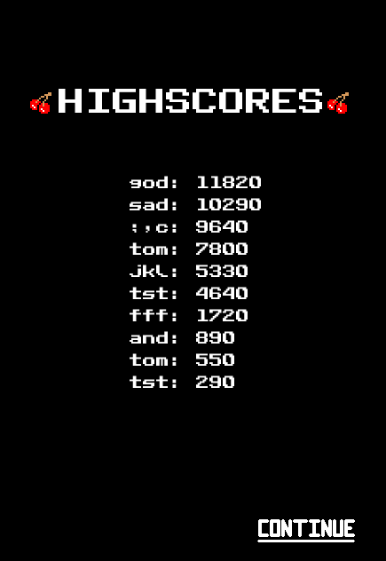
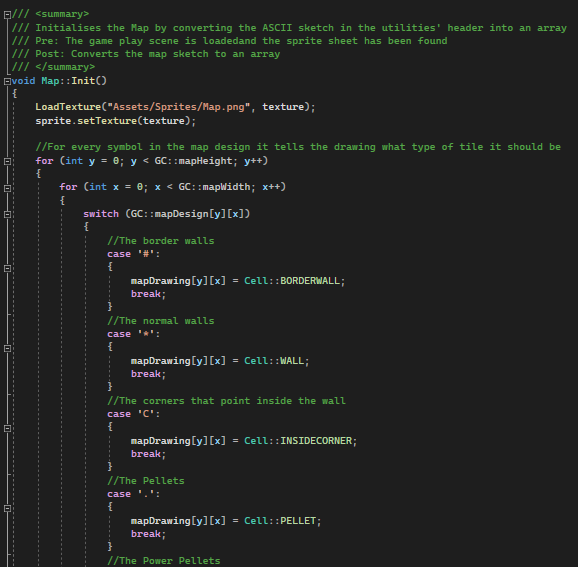
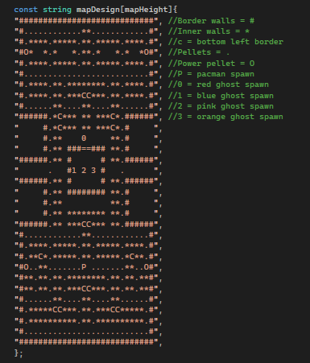
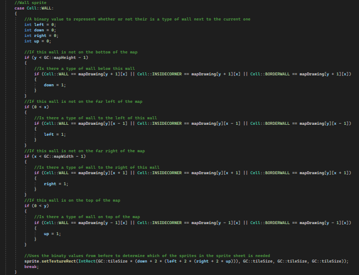
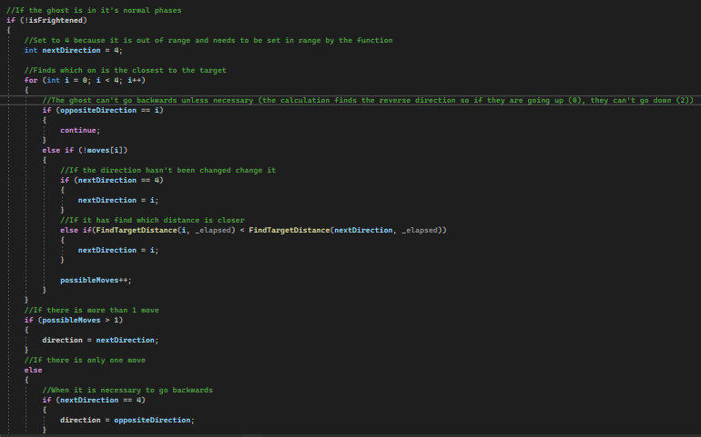

Pac-Man C++ Project


This is the first game I made without a game engine, which was created in 15 weeks using C++ and SFML, It helped me get a better understanding of C++, since I had to make the state machine myself. I always enjoyed Pac-Man as a kid, so I really enjoyed researching the specifications of pacman and coming up with my own implementation. I even made a highscore system using sql to create, update and display a database. The game also uses level generation function, that will create a render of a level based on a map given to it in ASCII. This allows for the addition of more levels with relative ease! The hardest part was giving the different ghosts different movement patterns based on their colour, but the easiest part was increasing the difficulty each level. All this required was some variables to be set at the start of a level to a value based on the level number.


- 
Code snippets:
-   When designing pacman, I realised that an efficient way to handle all collision and level logic would be through a tile system. I decided that I would separate the level into 16x16 tiles and each tile would have a state. So I made a 2D array of tiles that would store the type of tile, meaning that if the player tried to walk into a wall tile, they would stop. Or if they shared a tile with a ghost, they would die. This removed the need for any collision detection in the game. This also then meant I could generate the level based off my grid system. I created a drawing in ASCII that even had spawner tiles for the player and ghosts. Then what I would do at the start of the game, as you can see, I would loop through this map, and with a switch statement I would assign a new array an enum state based on the tile type. This made it possible to draw level purely with code and maybe one day, if I were to add the functionality, read an external file for the level drawing. That would allow anyone working with me or with the game to make their own levels outside of the code.
-  Since the map was already split into tiles, the last thing I needed to add to make the level creation and generation automated was to ensure that the game knew, in an efficient manner, which sprite was needed. By feeding the game one large tileset for all of the level art, I could choose each sprite based on the enum state. This would prove inefficient, however, if I were to do this for every single different sprite. So for the walls, which used the same logic for all sprites, I gave it the enum state "wall" and would then check the surrounding tile types. I think came up with a formula that would produce a number based on how many walls there were and that number would then lead to the correct sprite on the sprite sheet, cutting down the need for unneccesarry logic.
-  One feature I am really proud of is my ghost behaviour. In the original Pac-Man, the ghosts had personalities and would thus behave differently in game based on their colour. They would also switch between trying to reach the corner of the map and their attack target in waves. Finally, they would need states that override the original behaviour, such as how they run to spawn on death. So what I did was create a couple functions and an ID for the ghosts. The ghost would have a find target function that found the place they needed to move closer to based on state and personality, i.e. red ghost chases player but pink tries to go in front of player. After the target is found, they move in that direction with a couple rules. They can't turn around unless they have no choice and they will always choose the tile closest to the target, even if the overall path is longer. This all worked really well and the override states worked great too. However, if I were to redo this, I would have the ghost states be enums as I originally decided to use bools. This was when the scope of the ghosts was smaller and I regret not changing it.